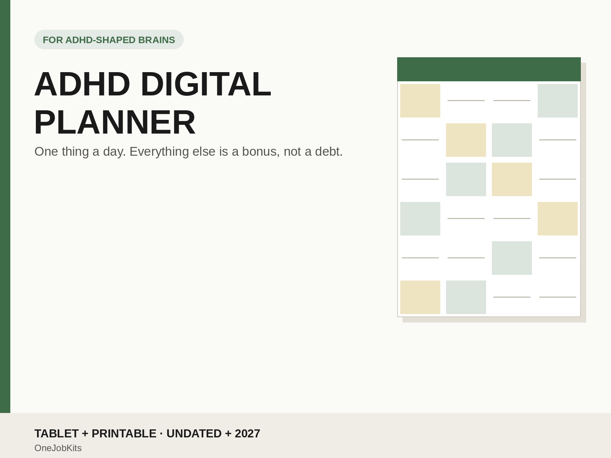

OneJobKits · Kit #35
ADHD Digital Planner — ADHD planner printable for tablet and paper

If you searched for an ADHD planner printable, your planner graveyard is probably already full: beautiful systems that assumed a brain which holds a list, trusts a streak and feels a deadline coming. They worked for nine days. This planner assumes none of that — it is not a normal planner with "ADHD" written on the cover.
Its whole strategy fits in one line: one thing a day. Every week page carries a shaded ONE-thing band per day; every day page starts with a Top 3 and a parking lot for everything else. A day whose one thing happened is a won day — the rest is bonus, never debt. This page gives you the rescue pages free, right here: the brain dump and the Day Reset. Below them is the full planner they come from, in two editions — a hyperlinked tablet planner and a printable twin — because paper people and tablet people deserve the same system.
Free download — start with the Brain Dump & Day Reset starter
The FREE Brain Dump & Day Reset starter is a 4-page PDF: a brain-dump page to empty your head onto, a Day Reset page for the days the system collapses, a dopamine-menu starter, and a weekly-reset checklist. It is the part of the planner you will reach for on the worst days — which is exactly why it is the free part.
Download the free Brain Dump & Day Reset starter (PDF)
What the starter does not do: it rescues a day; it does not hold a year. The full planner below adds the months, weeks and day pages that carry the one-thing system forward, the routine builders and habit loops that make ordinary days easier, and the focus logs that teach you your real timing.
What's inside the full kit
- Tablet edition (PDF, 60 pages, hyperlinked) — Contents taps jump to every section; every section page links back. Built for GoodNotes, Notability and most PDF annotation apps
- Start Here (2 pages) — the system in plain language, and the way back when it stops working
- Monthly — 12 undated month grids, each with its own month review page (24 pages): look back without a verdict, then set the next month's one thing
- Weekly (8 pages) — the week at a glance, with the shaded ONE-thing band for each day
- Daily (8 pages) — Top 3, time blocks from 07:00 to 21:00, and a parking lot for everything that is not today
- Brain Dump (3 pages) + Day Reset — empty your head onto paper, then restart with one thing
- Dopamine Menu (2 pages) — a reward menu you stock once and use forever, instead of deciding under load
- Routines (3 pages) — morning and evening routine builders made of small, movable blocks
- Habit Loops (3 pages) — habit tracking that counts TOTAL days done; a missed day breaks nothing
- Focus Sessions (2 pages) — session logs that record planned vs real time, so your estimates get honest
- Notes (2 pages) — for everything that fits nowhere else
- Printable twin (PDF, 60 pages) — the same pages with the links removed and the ink lightened, for Letter or A4 home printing; print a month at a time and keep the binder thin
- Quick-Start Guide (PDF, 2 pages) — the 20-minute setup checklist, the rules that make it work, and the Pro map
- Pro ($49) adds the Dated 2027 edition (PDF, 102 pages, hyperlinked) — 12 dated months with 24 review pages interleaved, all 52 dated weeks (Mon 28 Dec 2026 – 31 Dec 2027), day pages, and the full Brain Dump / Dopamine / Routines / Habits / Focus / Notes sections, zero setup
- Pro adds the Brain-Dump Bonus Pack (12 sheets) — grid dump, tornado page, the 2 a.m. page, short day reset, weekend reset, travel dopamine menu, waiting-room page, phone-call capture, errand run, inbox-zero paper, idea greenhouse, travel shutdown
- Pro adds the Focus Sticker Pack (16 PNGs) — FOCUS · BRAIN DUMP · TOP 3 · DONE ✓ · LATER · ONE THING · RESET · WIN! · 2 MIN · BREAK · CALL · BUY · HOME · WORK · IDEA · REST, sized for tablet apps
A filled example — one sample week, so you can see the finished thing
There is no "correct" filled planner — there is only yours. This sample week belongs to a fictional user, Sam, and it is included so you can see the shape of a real, imperfect week inside the system:
| From Sam's sample week | What is written there |
|---|---|
| The ONE-thing band | Mon: send the invoice · Tue: call the dentist · Wed: — (blank, a lost day) · Thu: finish the report draft · Fri: book the train · Sat: clear the kitchen table · Sun: nothing planned, on purpose |
| Wednesday, the lost day | The day page is empty and the week still counts: Thursday opens with the Day Reset page — brain dump of 14 items, one thing chosen, week restarted. No streak was broken, because there are no streaks |
| Focus-session log | "Report draft — planned 25 min, real time 47 min." "Inbox — planned 15, real 15." The log's job is calibration, not judgment: Sam's next plan says 45 |
| Habit loop | "Meds with breakfast — 19 total days this month." The count only grows; the two missed days are simply not counted, not punished |
| Parking lot | Six items parked on Monday's day page — three moved to later days, two deleted by Friday, one still parked. Parked is a fine place for a task to be |
That is the whole design in one week: the plan bends, the record stays kind, and the way back is a page, not a personality change.
Who it is for
Adults with ADHD or an ADHD-shaped life — students, remote workers, parents, anyone whose time disappears and whose tasks live in their head — who want one system that works on a tablet or on paper, starts any day of the year, and survives being abandoned for a week.
Who it is not for
Anyone looking for treatment, therapy or medical guidance — there is none in here, on purpose. It is also not a dated paper diary: the Base edition is undated by design (Pro adds the dated 2027 edition), and if you want an app with alarms and sync, a PDF will not pretend to be one.
Questions buyers ask
- Does it work in GoodNotes or Notability — and what if I prefer paper?
- Both are covered. The tablet edition is a hyperlinked PDF — Contents taps jump to each section and every section links back — and works in GoodNotes, Notability and most PDF annotation apps. The printable twin is the same 60 pages without links, lightened for home printing on Letter or A4.
- Is it dated or undated?
- The Base planner is undated on purpose: start any day of any year, skip a month, and nothing is wasted or expired. Pro adds the fully dated 2027 edition — 12 dated months and all 52 dated weeks — for people who want the dates printed for them.
- What happens when I fall off the planner for a week?
- You use the Day Reset page, which is the written way back: dump everything out of your head, pick one thing, restart small. Missed days are blank boxes, not broken streaks or failures — the system is designed around falling off and returning, because that is how it will actually be used.
- Does it use streaks to track habits?
- No — deliberately. The habit loops count TOTAL days done, so a missed day costs you nothing and the count never resets to zero. One broken streak ends most planners; a total only ever grows.
- Is this a medical or treatment product?
- No. It is an organisation tool only. It makes no treatment claims and does not diagnose, treat or manage any condition. If you work with a clinician or coach, the weekly reset page makes a good shared record to show them — as a record, not a therapy.
- What does the free starter cover, and what does the full planner add?
- The free starter is 4 pages: a brain dump, a day reset, a dopamine-menu starter and a weekly-reset checklist — the rescue kit. The full planner adds the whole year system around it: months, weeks and day pages with the ONE-thing band, routine builders, habit loops, focus-session logs and notes — and in Pro, the dated 2027 edition, 12 bonus sheets and the sticker pack.
- How long does setup take?
- About 20 minutes, following the Quick-Start Guide: import the file, stock your dopamine menu once, set up this week's page. There are no accounts, no apps to learn and no subscription — it is a PDF you own.
Prices
Base: $29 · Pro: $49 — one-time payment, digital download. No subscription; the files are yours.
Can't find the kit you need?
We build it. Ask us — first asker gets it at half the shelf price. Tell us the job at onejobkits.com and we will build the kit for it.
Related kits
Please know: this planner is an organiser and records system only. It is not a medical product, makes no treatment claims, and does not diagnose, treat or manage any condition. All example data is fictional (Sam and Sam's week are invented, and the sample says so).